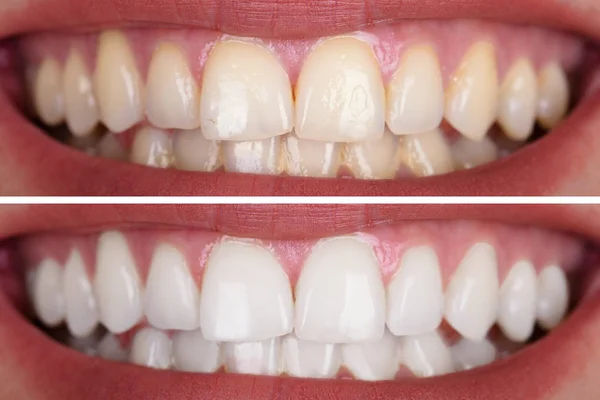

Votre parcours
De la première consultation au suivi, nous vous accompagnons à chaque étape de votre traitement.
Examen complet et écoute de vos attentes.
Diagnostic et devis validés ensemble.
Organisation des étapes et des rendez-vous.
Réalisation des soins en toute sécurité.
Pose des prothèses sur mesure.
Contrôles réguliers et maintenance.
Nos spécialités
Chaque soin a sa page détaillée : cliquez sur un soin pour tout savoir sur son déroulement au cabinet.

Bilan bucco-dentaire, détartrage et conseils personnalisés pour garder des dents saines toute la vie.
En savoir plus →
Traiter les caries et restaurer vos dents en préservant un maximum de tissu naturel.
En savoir plus →
Prévenir et traiter le saignement des gencives et le déchaussement des dents.
En savoir plus →
Conserver une dent infectée ou douloureuse plutôt que de l'extraire.
En savoir plus →
Remplacer ou recouvrir les dents abîmées ou manquantes, pour retrouver confort et sourire.
En savoir plus →
Remplacer durablement une ou plusieurs dents manquantes, au plus proche de la dent naturelle.
En savoir plus →
Des soins dentaires adaptés aux enfants de 3 à 16 ans, en douceur, pour instaurer dès le plus jeune âge une relation de confiance avec le dentiste.
En savoir plus →
Un sourire plus lumineux, en toute sécurité et sous le contrôle du praticien.
En savoir plus →
Une douleur, un abcès, une dent cassée ? Appelez-nous : nous faisons le maximum pour vous recevoir rapidement.
En savoir plus →Prenez rendez-vous en ligne ou contactez-nous pour toute question sur votre traitement.